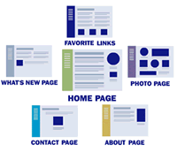

Reliable, Free Web Hosting |
1-800-396-1999 |
| Compare Web Hosting Packages | Contact Us |
Site Builder UtilityMaking Website Building SimpleDesigning and building your new website doesn't need to be difficult! With web hosting services from Freeservers, even with our free web hosting package, you'll gain access to one of the easiest-to-use website building tools available anywhere: Site Builder. When you start creating your website with our tool, you'll discover how easy it can be to build a website in just a few minutes. No matter what type of site you want to create or what kind of design you have in mind, you'll be able to bring it to life. There's no need to be an expert on web design or technical online requirements; our website builder will guide you through every step of the process. Designing Your WebsiteGet started by selecting a design style from a wide variety of color combinations and themes. Find the design that best represents the vision you have for your website and then decide whether to use it across your entire website or only on selected pages. If you find you want to change your design style later, it's no problem. You won't need to worry about redoing any of your pages; the tool will simply apply the new layout, color scheme, or style to them. Change designs whenever you want! Once you've created a central homepage, you can add multiple pages that follow your chosen design and colors. They'll be ready to edit with your own content. Adding, modifying and deleting pages can be done quickly and easily. Best of all, you can do it at any time from any computer connected to the internet. Create individual pages by selecting page types and layout styles from our many pre-built templates. Choose from options such as a blog template, photo album page, or guest book. Personalize your pages quickly and easily by clicking on the red "Edit" button and adding your own text and photos. Step-by-Step GuidanceOnce you complete a step of the website building process, the Site Builder will guide you to the next step. You'll be able to build your entire website in minutes without investing your time in learning the intricacies of web design. The easy- to-use tools from Freeservers allow you to keep your time free for focusing on what really matters to you, whether it's composing your blog entries, putting together photo albums to share with your family and friends online, or building your business. Freeservers can make achieving any goal with your website easier. |